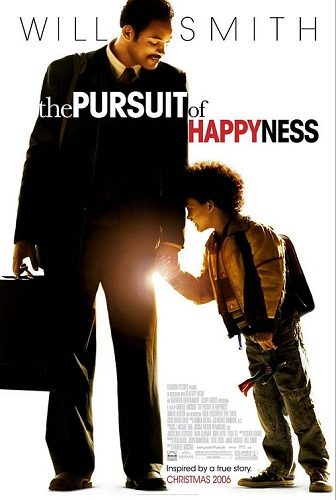

Lista de Filmes Favoritos
1 - Interstellar
Sipnose:As reservas naturais da Terra estão chegando ao fim e um grupo de astronautas recebe a missão de verificar possíveis planetas para receberem a população mundial, possibilitando a continuação da espécie. Cooper é chamado para liderar o grupo e aceita a missão sabendo que pode nunca mais ver os filhos. Ao lado de Brand, Jenkins e Doyle, ele seguirá em busca de um novo lar.

2 - A Procura da Felicidade
Sipnose:Chris enfrenta sérios problemas financeiros e sua esposa, Linda, decide partir. Agora solteiro, ele precisa cuidar de Christopher, seu filho de cinco anos. Chris tenta usar sua habilidade como vendedor para conseguir um emprego melhor, mas só consegue um estágio não-remunerado. Seus problemas financeiros não podem esperar uma promoção e eles acabam despejados. Chris e Christopher passam a dormir em abrigos ou onde quer que consigam um refúgio, mantendo a esperança de que dias melhores virão.
3 - Vingadores Ultimato
Sipnose:Após Thanos eliminar metade das criaturas vivas, os Vingadores têm de lidar com a perda de amigos e entes queridos. Com Tony Stark vagando perdido no espaço sem água e comida, Steve Rogers e Natasha Romanov lideram a resistência contra o titã louco.

4 - Tropa de Elite
Sipnose:Nascimento, capitão da tropa de elite do Rio de Janeiro, é escolhido para chefiar uma das equipes cuja missão é apaziguar o Morro do Turano. Ele precisa cumprir as ordens enquanto procura por um substituto para ficar em seu lugar. Em meio a um tiroteio, Nascimento e sua equipe resgatam Neto e Matias, dois aspirantes a oficiais da PM. Ansiosos para entrar em ação, os dois se candidatam ao curso de formação do Batalhão de Operações Policiais Especiais.

5 - Pantera Negra
Sipnose:A história de T'Challa, príncipe do reino de Wakanda, que perde o seu pai e viaja para os Estados Unidos, onde tem contato com os Vingadores. Entre as suas habilidades estão a velocidade, a inteligência e os sentidos apurados.
6 - Superman
Sipnose:Superman embarca em uma jornada para reconciliar sua herança kryptoniana com sua criação humana.